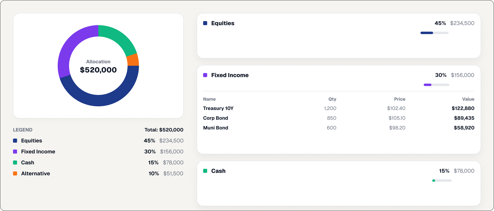
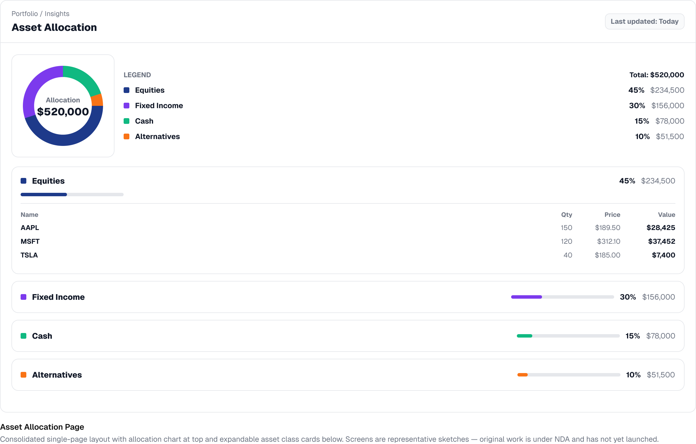

Owning the asset allocation portion of a $4.7M, legally-driven accessibility remediation program — redesigning an entrenched visual pattern under a compliance deadline while keeping it usable and on-brand.

Chart and card layout shown are a representative reconstruction — original work is under NDA.
The asset allocation page — used by clients to assess portfolio risk, diversification, and composition — carried high cognitive load: dense, unprioritized data split across two tabs with no clear information hierarchy. The chart's specific accessibility failure was color contrast, but remediating it meant changing a visual pattern entrenched in production and the brand system for years.
Bring the asset allocation experience into full WCAG 2.2 AA compliance while rationalizing its design patterns to align with the broader design system — without breaking the mental models that existing users relied on.

The biggest open risk is adoption: even though functionality stayed the same, these are major visual changes, and it will take clients time to adjust. In hindsight, I'd have thought about component scalability from day one rather than adapting as the program grew — designing Figma components built to scale from the start would have saved real rework later.